本次学习的是DC-5靶机，总结起来这次靶机打起来不算很难，但却浪费了我很多时间，做着做着发现GLIBC版本不一样，于是导致不得不重做一遍，本次靶机涉及文件包含漏洞，一句话木马上传，反弹shell，SUID提权，以及GNU Screen漏洞
文件包含
本次只涉及一个flag
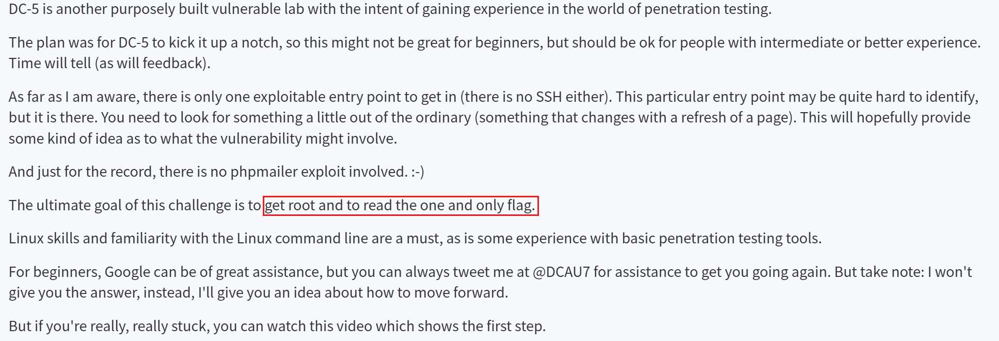
先把靶机设置为nat模式，否则扫描不到靶机，接着查看靶机mac地址：
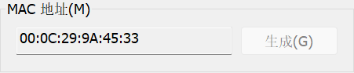
然后扫描靶机ip:
1 | arp-scan -l |
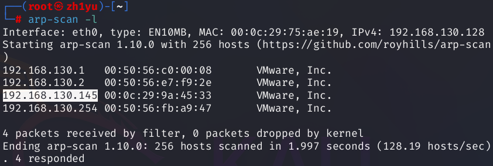
192.168.130.145
dirsearch扫描靶机的文件：
1 | dirsearch -u 192.168.130.145 |
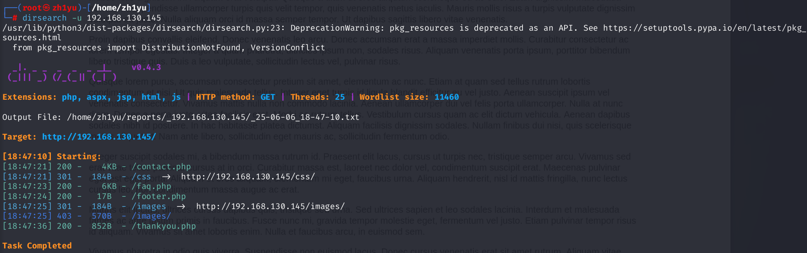
我们去web端查看有没有漏洞，发现一个类似留言板的页面，但没有xss
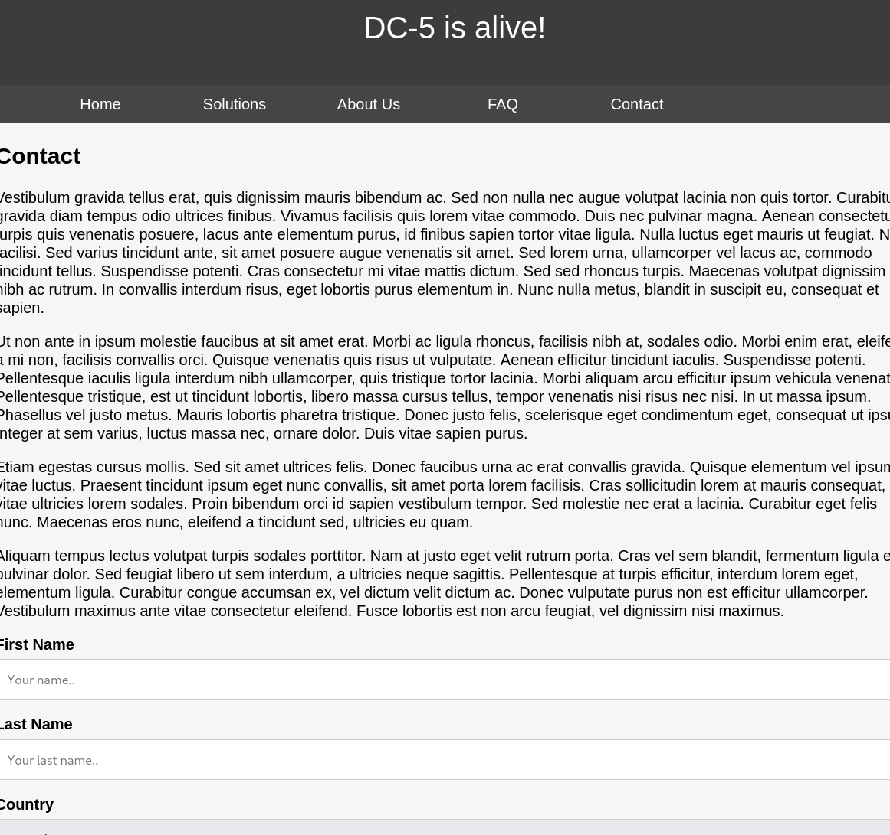
后面发现每次一刷新页面，下面的copyright数字就会改变：
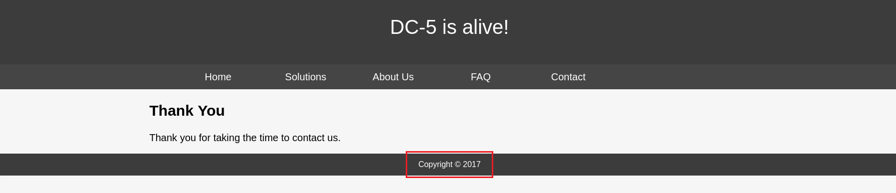
我们发现这其实一个文件：footer.php，之所以会因为刷新而改变这个页面的数字，猜测这个页面文件被包含到了其他页面中
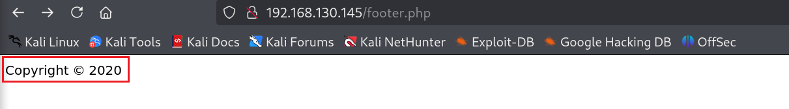
我们对thankyou.php页面添加一个file的参数，内容就是/etc/passwd
1 | file=/etc/passwd |
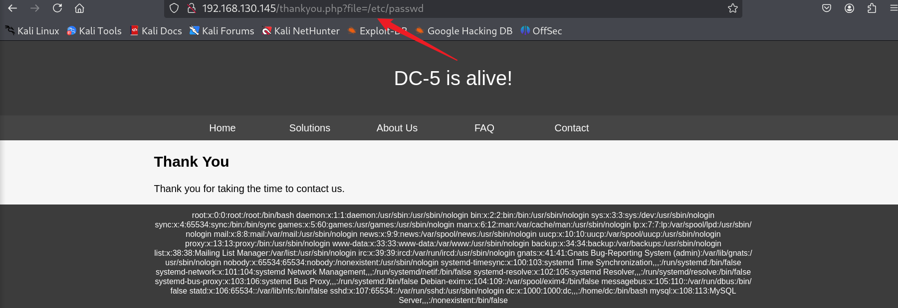
有回显，我们的猜测是正确的，既然如此，我们把file的内容改成一句话木马：
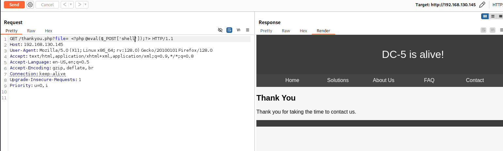
该一句话木马会被日志文件记录，nginx的日志文件一般在/var/log/nginx/access.log，我们查看其内容
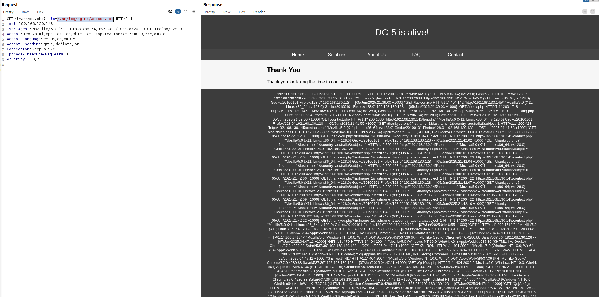
回显的内容太多了，直接用蚁剑尝试连接（因为日志文件可以解析一句话木马，所以才能连接成功），ps：kali好像不自带蚁剑，可以自行查找文章下载
1 | http://192.168.130.145/thankyou.php?file=/var/log/nginx/access.log |
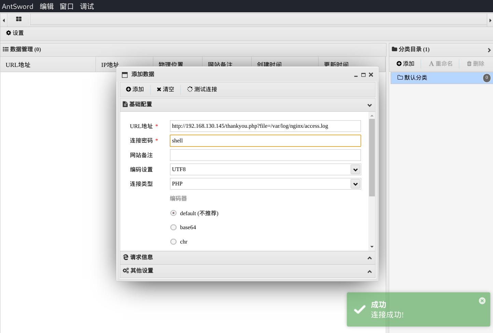
成功连接
反弹shell
连接成功后，我们尝试反弹shell，先开一个终端开启监听，然后nc反弹
1 | nc -lvnp 4444 |
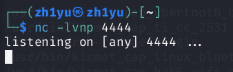
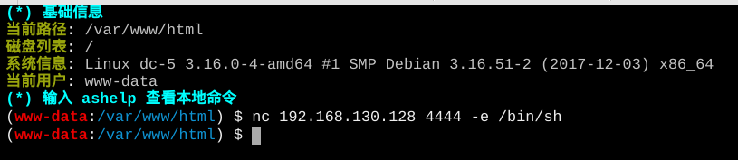
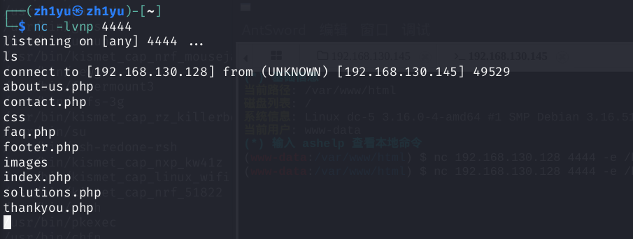
反弹成功后，切换到交互式shell
1 | python -c 'import pty;pty.spawn("/bin/bash")' |
SUID提权
我们拿到的肯定不是root权限，查找有没有suid提权的命令
1 | find / -perm -u=s -type f 2>/dev/null |
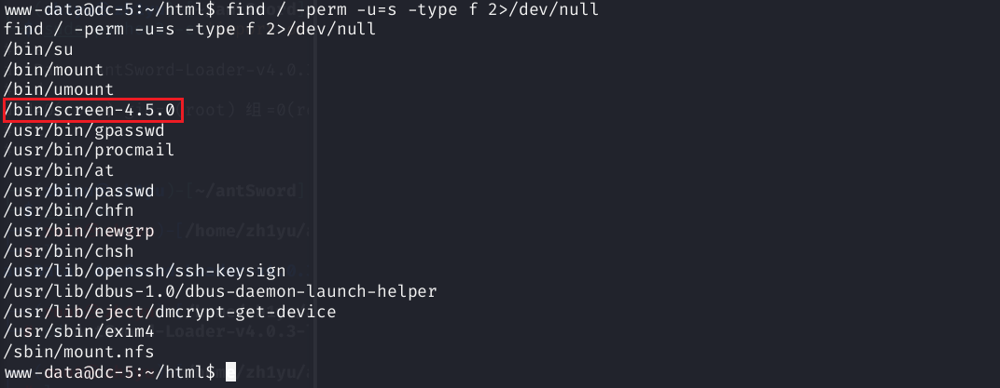
发现有个screen -4.5.0命令，而screen -4.5.0是存在漏洞的，先攻略下screen -4.5.0是什么：
Screen 4.5.0 是 GNU Screen 终端复用工具的一个旧版本。GNU Screen 是一个允许用户在单个终端会话中管理多个虚拟终端的工具，常用于远程服务器管理、长时间运行任务（如模型训练、编译等）以及会话恢复。
GNU Screen漏洞
我们使用searchsploit 查找与此相关的漏洞：
1 | searchsploit screen 4.5.0 |
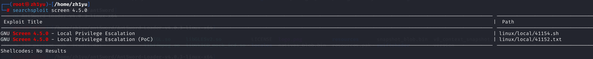
我们读取第一个sh脚本的内容
1 | cat /usr/share/exploitdb/exploits/linux/local/41154.sh |
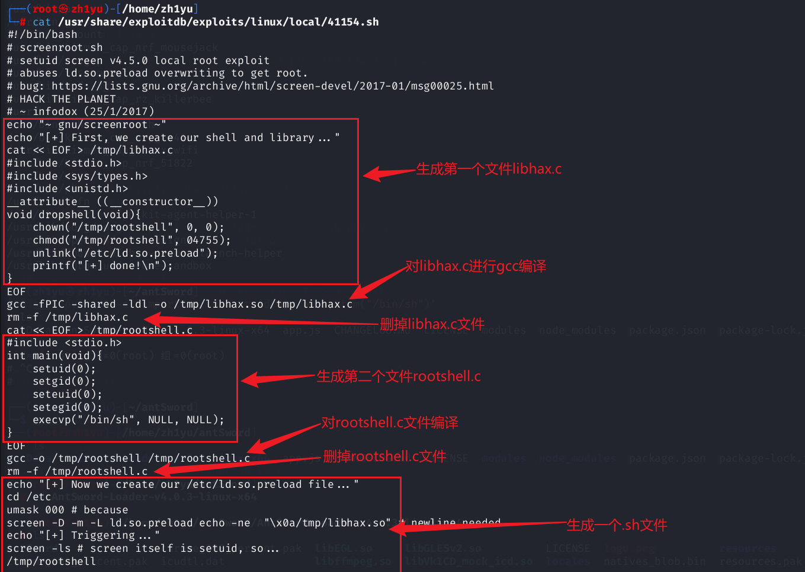
按照上面的操作一步一步来：我们先在当前用户目录下新增一个DC-5文件夹，然后切换到该文件夹
1 | mkdir DC-5 |
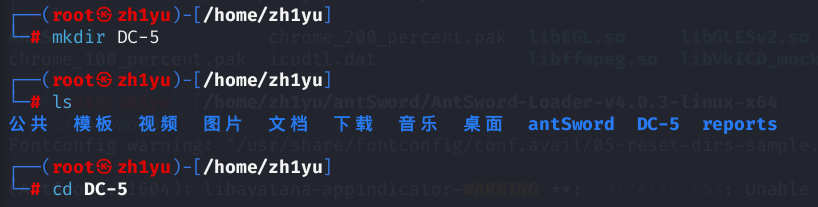
然后创建libhax.c文件进行添加内容：
1 | vim libhax.c |
1 | #include <stdio.h> |
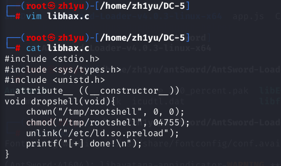
但是接着gcc编译的过程的报错了
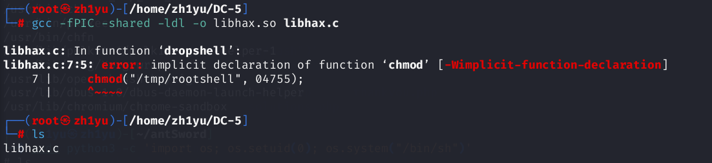
查资料是因为gcc的版本较高导致的，所以需要在后面添加-std=gnu89
1 | gcc --version |
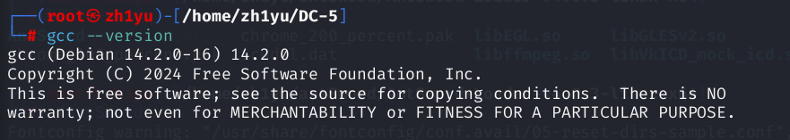
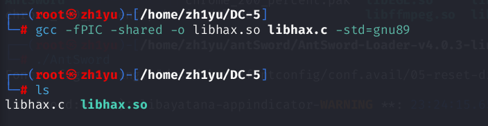
下一步我们需要生成rootshell.c文件
1 | vim rootshell.c |
1 |
|
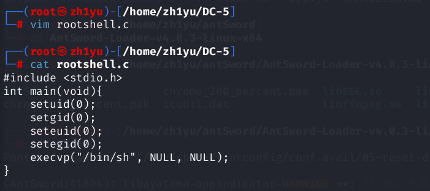
在进行下一步编译之前先查看GLIBC_的版本：
1 | strings /lib/x86_64-linux-gnu/libc.so.6 | grep GLIBC_ |
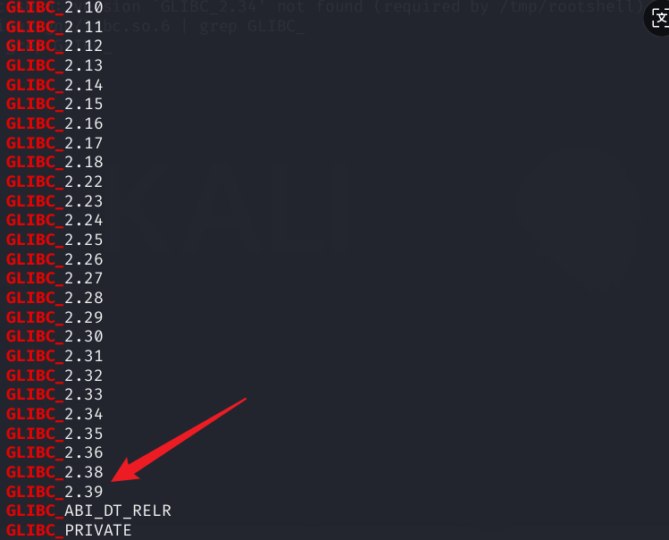
如果你的最下面的版本大于2.18就先不要按照我下面错误的方式做，下面是我做错的，走了许多弯路
错误：
如果不想看，可以直接跳转到正确的目录下
因为我不知道GLIBC_版本会导致问题，所以我还是照上面一样编译
1 | gcc -o rootshell rootshell.c -std=gnu89 |
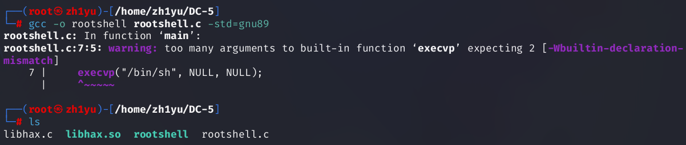
接着生成dc5.sh脚本：
1 | vim dc5.sh |
1 | echo "[+] Now we create our /etc/ld.so.preload file..." |
保存文件之前先输入:set ff=unix,防止脚本格式错误
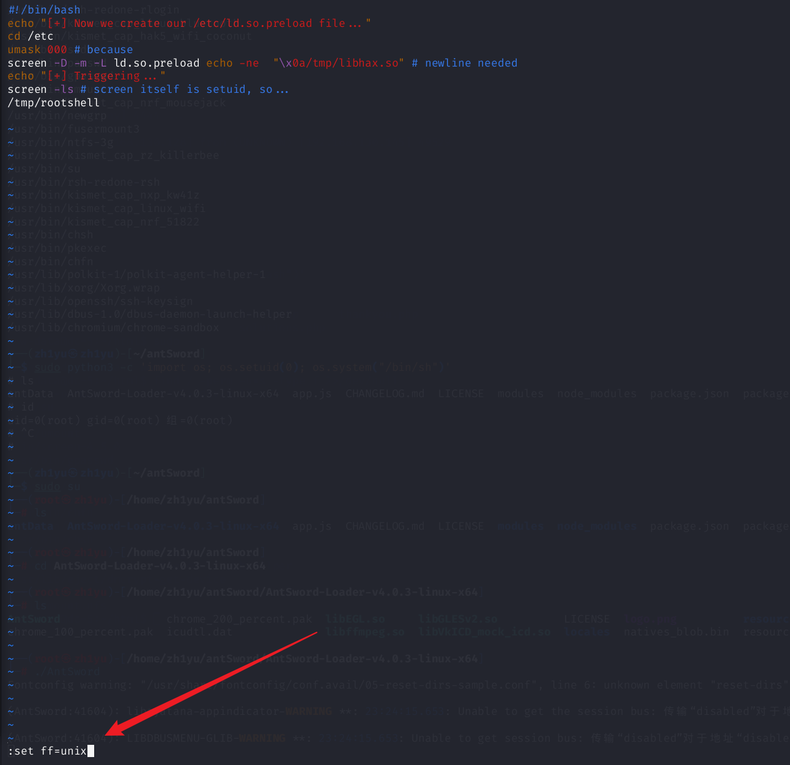
我们可以查看生成的dc5.sh的格式，是ascii text就没问题
1 | file dc5.sh |
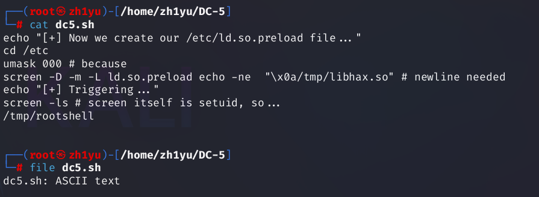
接着我们删掉没用的文件
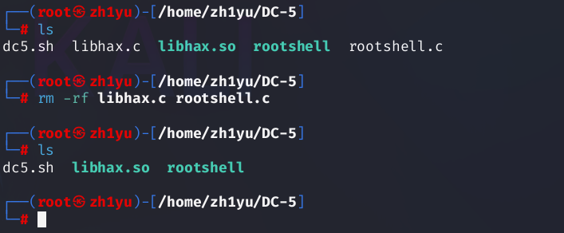
然后我们返回蚁剑在/tmp目录上传文件，这里是右键上传：
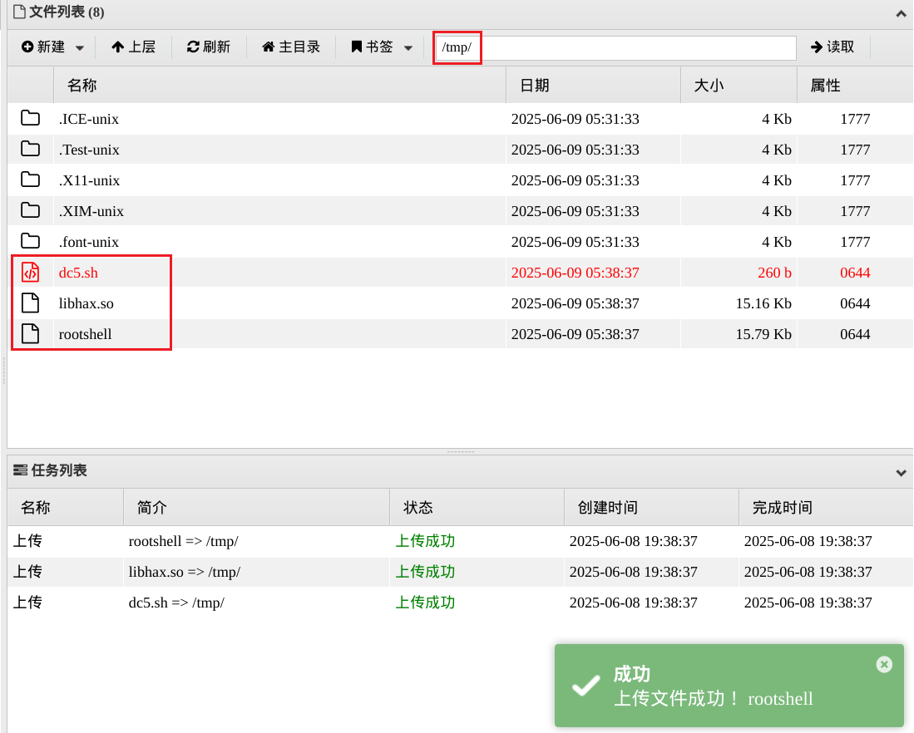
接着进入靶机shell，切换到/tmp目录：
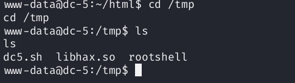
然后给dc.5.sh文件添加全部控制权限，然后执行该脚本：
1 | chmod 777 dc5.sh |
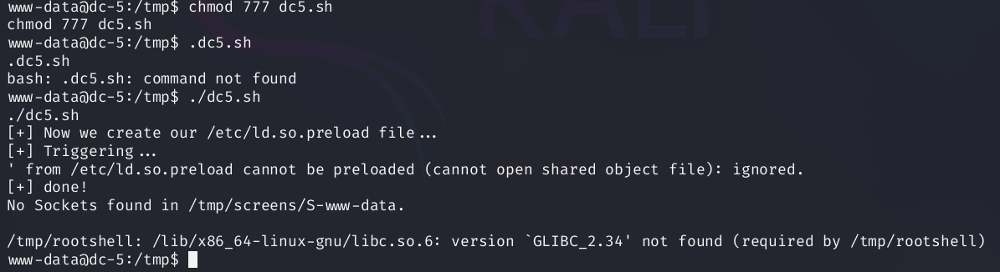
没错，你没看错，没有提权成功，原因就是因为我是用高版本的GLIBC_对rootshell文件编译导致产生了问题，解决的办法就是，把rootshell.c文件先上传到蚁剑上面，然后在靶机shell中进行编译，这样生成的rootshell文件就绝对没问题
我们看下靶机和kali上各自GLIBC_的版本：
1 | strings /lib/x86_64-linux-gnu/libc.so.6 | grep GLIBC_ |
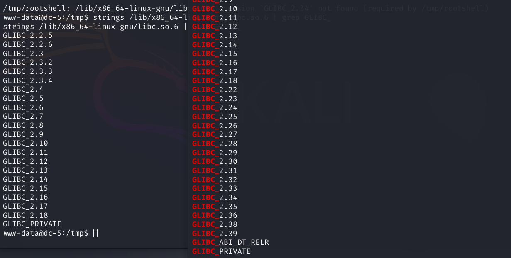
于是我想先把上传的rootshell文件给删了，但意外又产生了，没有权限！！！
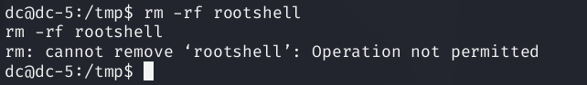
没办法，只能把靶机删掉，重新安装😭😭😭
正确：
下面是正确的做法：
我们在kali中生成rootshell.c文件后，不要进行编译！！！，libhax.c可以在kali上编译，dc5.sh还是和上面一样的生成方式
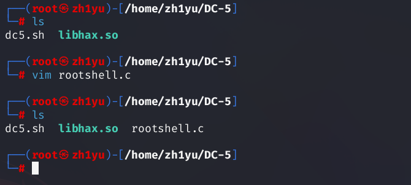
然后把这三个文件上传到蚁剑中靶机的/tmp目录下：
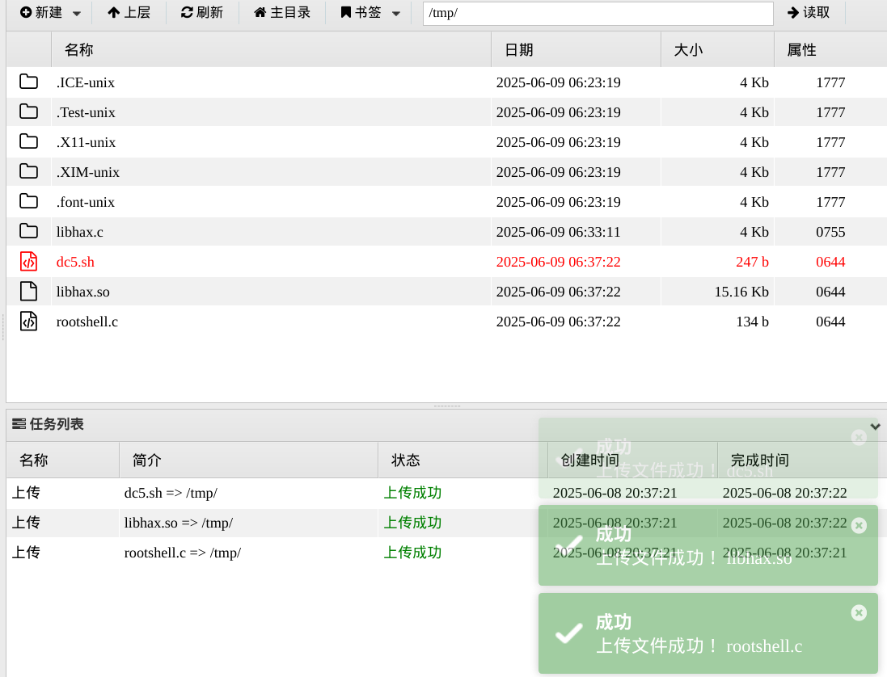
然后进入到靶机shell的/tmp目录下，然后对rootshell.c文件进行编译，然后删除没用的文件：
1 | gcc -o rootshell rootshell.c |
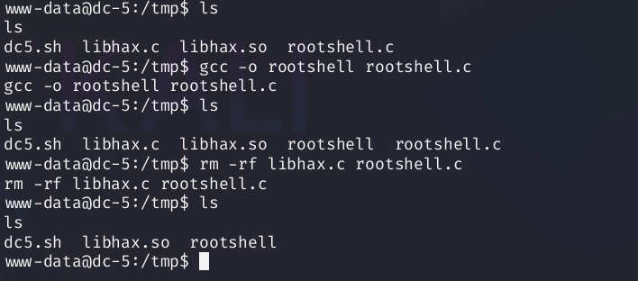
我们继续给dc5.sh添加权限，然后执行：
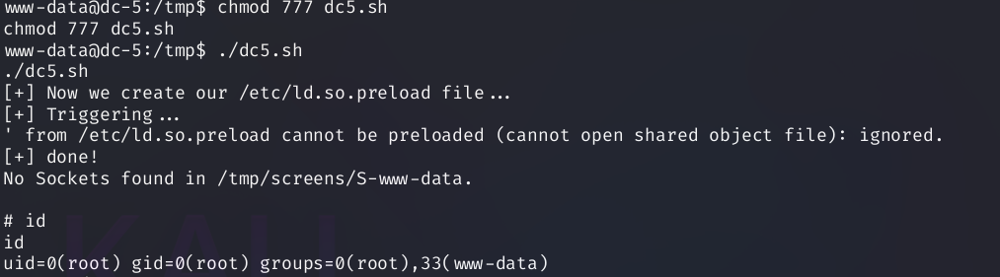
这次终于成功了
然后寻找flag文件，查看flag内容：
1 | find / -name *flag* |
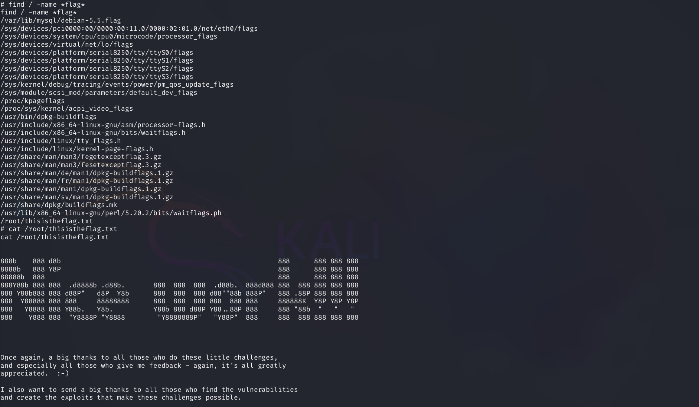
须知少时凌云志，曾许人间第一流
本篇文章参考：
https://blog.csdn.net/qq_51577576/article/details/129972333，https://blog.csdn.net/weixin_73904941/article/details/142856475